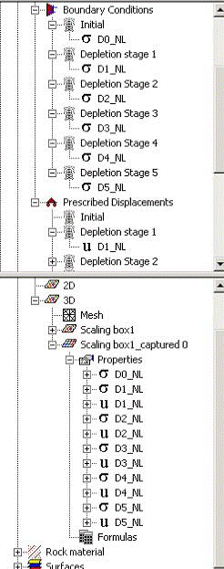

The scaling box attributes dialog appears by right clicking on a scaling box in the model tree and selecting attributes.
This dialog provides information of the scaling box, which can be used for scaling up techniques (Homogenization) and scaling down techniques (zoom-in).
The dialog consists of two parts: (i) Size and position and (ii) Homogenization
Size and position
The user must define a brick shaped box, which can be oriented in any azimuth, but will have one axis in the Depth direction (no angle input is possible). The brick shape is defined by entering a midpoint (center of gravity) and edge length, width and height (Depth) dimensions.
The azimuth is the (clockwise) angle in degrees from the Northing axis to the scaling box length axis.
Homogenization
The homogenization technique is used to create a single anisotropic model from several (elastic) layers or from a distributed set of elastic parameters (pointset Young's Modulus and Poisson's Ratio). It creates a best estimate of an anisotropic model which matches the behaviour of the box, when stressed externally. A small Hexahedron Finite Element model is made from the box, which can be set in refinement by changing the length divisions. The method is meant for upscaling purposes and should not be used for non-linear behaviour.
See homogenization for details on the process.
From any Scaling Box, a zoom-in model can be created. The most logical use is to run the full model with coarse elements, with few variations in reservoir properties or pressure.
When creating a zoom-in model in a model with results, Geomec mimics the far-field behaviour by porting the Depletion Stage dependent stresses and deformations to the zoom-in box. The far-field elastic response can also be approximated in some cases, where the zoom-in box is small with respect to the full model.
Step 1:
Right-click on the Scaling Box of choice. Select "Create Zoom-In Model".
A dialog appears.
Step 2:
Calculate an equivalent G-modulus from the far-field (if the option is not greyed out) or choose a relevant stiffness of the boundary elements. See "Zoom-in technique" for more details. A high value of G ignores the stresses from the large model, since the forced deformation will be overruling. A low value of G ignores the deformations from the large model, since they are taken up by the soft layer around the zoom-in box. Hence stresses are ruling. A field-scale G basically assumes the best of worlds. The user might set interface stiffness values himself later (see Step 6).
Press OK and the user is requested for a file name for the Zoom-in model.
Step 3:
Select the surfaces and faults which need to be used for the zoom-in model. This can be the same surfaces that were used in the full scale model, but you may use a new set of surfaces, for instance with a finer mesh. You can import new surfaces in the zoom-in box model, or already in the large scale model, at which they will be copied to the zoom-in model. All selected surfaces within the box must share nodes where they cross (just like in the full scale model). Select a spacing for the nodes of the side, top and lower surfaces of the zoom-in box. The spacing should not be too different from the spacing of the surfaces to prevent badly shaped elements. Sometimes this step has to be re-executed with other values as the re-mesh routine is not always able to construct a good mesh when cutting the imported surfaces with the bounding box.
Step 4:
Click Generate Surfaces. Then click OK. The chosen surfaces are cut with the box and the box is changed into 6 surfaces which share nodes with the internal surfaces and faults. This routine may take a while to execute. Geomec will create a new mesh and will assign surfaces.
Step 5:
Rebuild the model by attributing names, material parameters, pressures and temperatures to the Formations and Fault attributes. The captured stresses and deformations might be assigned to the boundary conditions already, otherwise they will reside in the "Data Storage" area as 3D-pointsets. The pointset name will contain the zoom-in box name and extension "captured". Drag the stress pointset σ-D0_NL (or D0_L for a linear run) from the Data Storage to the Initial Depletion Stage under "Boundary \ Boundary Conditions". Drag D1_NL to Depletion Stage 1, and so on for higher numbers. Now drag the deformation pointset U-D1_NL to Depletion Stage 1 in the Prescribed Displacements (also under "boundary"). Do a similar job for the higher depletion stages. Note that there is no displacement pointset for the initial stage.

Step 6:
Check the boundary conditions by opening "Interface attributes" under "Boundary". The pre-selected G-value can be changed, but the user might also choose to manually set the normal and shear stiffness of the interface elements in MPa/m. For Field units: 1MPa/m = 44.2 psi/ft = 850 ppg. The latter unit is a bit odd for stiffness elements, but is formally correct. Reasonable values will be 10-100 MPa/m normal stiffness and 1-50 MPa/m shear stiffness. The user can always check the sensitivity of applying stiff or soft boundary elements.
Step 7:
Re-run the model. Make sure that you take non-linear boundary conditions for non-linear runs and linear boundary conditions for linear runs. Geomec will not test this assumption!
In the zoom-in model, the horizontal stress ratios KH and Kh (resident in the material models) will be neglected. Geomec will take the initial stresses from the large scale model. In fact Geomec uses the pointset under the Boundary Conditions \ Initial as the initial stress tensor for the whole model. This setting cannot be changed.